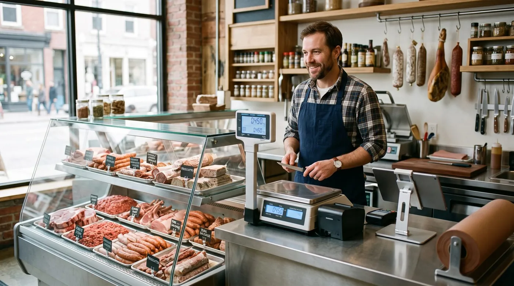

Butcher Shop POS System in 2026: How to Choose
A butcher shop POS system is not the same animal as a regular retail register. You sell by weight, not by the unit. You cut to order, so half your inventory changes shape between the delivery dock and the display case. You live and die by margins that shrink, literally, with every trim and every degree of moisture loss. This guide walks through what a real meat market POS has to do, the features that actually matter behind the counter, and how the most-recommended systems compare. No hype, just the trade-offs that affect your till and your bottom line.

Why a butcher shop needs a specialised POS
Walk into any meat market and you'll see why a generic point-of-sale app falls short. Most retail systems assume a fixed-price item with a barcode: scan it, ring it, done. A butcher counter breaks that assumption in three ways at once.
First, the price isn't fixed, it depends on weight, and that weight is only known the moment the cut hits the scale. Second, the inventory isn't stable, a whole primal becomes steaks, roasts, trim and bone, each sold at a different price per pound, with different yields. Third, the product is perishable and traceable, you need to know which supplier and which lot a pack came from, and how long it has left. A butcher shop POS system is built around those three realities. A general one papers over them, and you pay for the gap in lost margin and manual workarounds.
The payoff of getting it right is concrete: faster service at the counter, fewer pricing mistakes, accurate stock by weight, and reports that finally tell you which cuts make money. That's the lens we'll use for every feature below.
Selling by weight: scales and label printing
This is the heart of any meat market POS, so it deserves the most scrutiny. There are two common ways butchers sell by weight, and a strong system handles both.
Weigh-at-the-till (live weighing)
The customer asks for a cut, you place it on a connected scale at the counter, and the POS reads the weight live, multiplies by the price per pound or kilogram, and drops the exact line total into the sale. No mental math, no typos, no rounding arguments. The key word is connected: the scale talks to the POS directly, so the weight flows into the transaction automatically rather than being keyed in by hand.
Pre-pack and label printing
For the display case, you weigh and wrap cuts ahead of time and print a label. A capable system prints the item name, the weight, the price per unit, the total price, a packed-on or sell-by date, and a scannable barcode that embeds the weight and price. At checkout the cashier simply scans the label and the correct amount rings up instantly. Batch-coded labels can also carry the lot reference, which is where weighing and traceability meet.
7 features that matter for meat markets
Vendors love long checklists. For a working butcher shop, these are the seven that actually change your day:
- Sell by weight with a connected scale, live weighing at the till and embedded-barcode labels for the case. The non-negotiable core.
- Batch & lot traceability, link every cut back to the supplier delivery and lot it came from, so a recall is a two-minute lookup, not a panic.
- Inventory by weight with shrink tracking, track stock in pounds or kilos, account for trim, bone and moisture loss, and see true yield from primal to retail cut.
- Margin reporting per cut, know which items make money after shrink, not just gross sales. This is where most generic POS systems leave money on the table.
- Special & holiday orders, take deposits and manage the wave of custom orders around Thanksgiving, Christmas, Easter and grilling season without losing a slip of paper.
- Multiple staff with permissions, individual logins, role-based access and shift tracking so the counter, the cutting room and the register stay accountable.
- Offline mode with auto-sync, keep weighing, selling and printing through an internet outage; data uploads when you reconnect.
A practical rule: insist on the first three as table stakes, treat margin reporting as the feature that pays for the system, and switch on the rest as your shop grows.
Special and holiday orders
For many butchers, a huge share of yearly profit lands in a handful of holiday weeks. A standing rib roast for Christmas, a turkey for Thanksgiving, a leg of lamb for Easter, custom grill packs all summer. A meat market POS that handles special orders, capturing the customer, the cut, the weight target, the pickup date and a deposit, turns a chaotic clipboard into a clean, searchable list. That alone can pay for the software in a single December.
Traceability, shrink and margins: where the money hides
These three are the features that separate a butcher POS from a cash register with a screen.
Batch and lot traceability
Traceability links each sale or pre-pack back to the supplier delivery and lot number it came from. Two reasons it matters: food-safety compliance, and recalls. If a supplier issues a recall, you can identify exactly which products, packs and dates are affected and pull only those, instead of clearing your entire case on a guess. It also makes inspections and audits dramatically less stressful, because the paper trail is already in the system.
Shrink tracking
Shrink is the butcher's silent tax. It comes from trim, bone, moisture loss, spoilage and cutting yield, and it's invisible to a POS that only counts units. A weight-aware system lets you record purchases by weight, track yield as a primal is broken down into retail cuts, and compare what you bought against what you actually sold. Suddenly the gap between "I bought 80 lbs" and "I sold 64 lbs of cuts" is visible and measurable, not a vague feeling at month-end.
Margins per cut
Put weight-based costing and shrink together and you finally get honest margins. Real-time margin reporting shows which cuts earn their place in the case once yield and loss are accounted for. Maybe your ground beef is carrying the counter while a slow-moving specialty cut quietly loses money. Without per-cut margin data you're guessing; with it, you price and merchandise deliberately.
The smartest question to ask a butcher POS vendor isn't "does it print labels?" It's "can it show me my true margin per cut after shrink, and does it support my exact scale?"
digabloPos
For an independent butcher who wants to start lean and stay in control of costs, digabloPos is the strongest all-rounder. The base plan is free forever (no time limit, no credit card), so you can set up a real, working register before spending a cent. It's built for the way meat markets actually sell, by weight, and pairs that with inventory and margin tracking, true offline mode for outage-proof Saturdays, and pay-as-you-grow modules you switch on only when you need them. It also handles the practical extras butchers ask for: customer credit and house accounts for restaurant and trade buyers, and it's ready for e-invoicing. As with any system, confirm your specific scale and label-printer models are supported before you commit.
👍 Strengths
- Free forever, no credit card, set up in minutes
- Sell by weight / scale-ready workflow
- True offline mode with auto-sync
- Inventory & margin tracking
- Pay-as-you-grow modules
- Customer credit / house accounts
- Ready for e-invoicing
👎 Notes
- Newer brand than the US giants
- Some advanced modules are paid
- Confirm your exact scale & label-printer models are supported
Why butchers shortlist it
Want to test it without spending a cent?
Set up a real, working register for your counter in minutes. Free forever, no credit card.
Create my free registerHow to choose: a 6-point checklist
Before you compare brands, get clear on what your shop needs. Run through these six questions and write down your answers.
1. How do you sell, live weighing, pre-pack, or both?
If you weigh to order at the counter, you need live scale integration. If you fill a display case, you need embedded-barcode label printing. Most butchers need both, so confirm the system does both with your hardware.
2. Do you need batch and lot traceability?
If you want recall-ready records and smoother food-safety audits, traceability isn't optional. Check how the system captures supplier lots and ties them to sales.
3. How important is shrink and margin reporting?
If you can't currently say which cuts make money after yield loss, prioritise a system that tracks inventory by weight and reports true margin per cut.
4. How big are your holiday and special-order swings?
If a few weeks a year drive a big share of profit, make sure special orders, deposits and pickup dates are handled in software, not on paper.
5. How many staff, and do you run house accounts?
Multiple cutters and cashiers need individual logins and permissions. If you supply restaurants or trade buyers on credit, you need customer credit / house accounts built in.
6. What's the real first-year cost?
Don't compare the sticker price. Add software, any card processing, scale and label hardware, and paid modules over twelve months, that's the only number that tells the truth.
Comparison table
How a free-to-start, weight-aware system stacks up against the meat-focused and general options butchers commonly look at. Figures are approximate and change often, treat them as a starting point and verify on each official site.
| Criterion | digabloPos | Markt POS | IT Retail | Toast | Generic retail POS |
|---|---|---|---|---|---|
| Free plan | Yes (forever) | Paid | Paid | Free Starter* | Varies |
| Sell by weight | Yes | Yes | Yes | Limited | Rarely |
| Scale & label printing | Verify your model | Yes | Yes | Add-on | Rarely |
| Batch / lot traceability | Yes | Yes | Yes | Limited | Rarely |
| Shrink & margin tracking | Yes | Yes | Yes | Limited | Partial |
| Offline mode | Yes | Partial | Partial | Partial | Partial |
| Customer credit / house accounts | Yes | Varies | Varies | Limited | Varies |
*Free or starter tiers come with conditions (higher processing rates, paid add-ons, or hardware requirements). Information checked June 2026 against official pages and specialist comparison sites. Capabilities, scale compatibility and pricing change frequently and vary by country, plan and contract, always confirm current details on each official site, and verify scale and label-printer support against your exact hardware before deciding.
How the meat-focused options stack up
Markt POS and IT Retail are both built around weighted products and perishable inventory, with scale integration, label printing and traceability aimed squarely at meat markets and grocery meat departments, strong, specialised, and priced as paid software. Toast is a heavyweight aimed primarily at restaurants and food service; some butcher shops with a strong prepared-foods or counter-service side consider it, but weight-based retail is not its core. A generic retail POS can ring up sales cheaply but typically struggles with live weighing, shrink and per-cut margins, leaving you with manual workarounds. digabloPos sits at the value end: a free-forever base, a sell-by-weight workflow, inventory and margin tracking, offline mode and house accounts, with the one caveat that you should confirm your exact scale and label-printer models are supported before you rely on it.
5 mistakes to avoid
- Buying a generic retail POS. If it can't weigh, track shrink and report margin per cut, you'll bolt on spreadsheets and lose the very visibility you bought a POS for.
- Assuming "supports scales" means your scale. Confirm your exact certified-scale and label-printer models, ideally with a live demo, before you commit.
- Ignoring traceability until a recall. The day a supplier issues a recall is the wrong day to discover your system can't trace a lot. Set it up from day one.
- Skipping offline mode. One outage during a holiday rush, with a line out the door, teaches this lesson the expensive way.
- Judging on sticker price alone. Add hardware, modules and a full year of any processing fees. The cheapest line item is rarely the cheapest system.
Ready to weigh your first sale?
Create a free register in minutes, free forever, no commitment, no credit card. Then confirm your scale and label printer in a quick demo.
Create my free registerFAQ
What is the best POS system for a butcher shop in 2026?
There's no single winner for every meat market, it depends on your volume, how much you cut to order, and whether you run house accounts. The strongest all-round pick sells by weight with a connected scale and label printing, tracks batch and lot numbers for traceability, monitors shrink and margins, and lets you start free and add modules as you grow. Always confirm your specific scale model is supported before committing.
How does a butcher POS sell products by weight?
A weight-based POS connects to a certified digital scale. Place a cut on the scale and the system reads the weight, multiplies it by the price per pound or kilo, and rings up the exact amount. Many setups also print a label with the item name, weight, price and a scannable barcode, plus a sell-by or packed-on date, so pre-packed cuts scan instantly at the till.
Why does batch and lot traceability matter for a meat market?
Traceability links each sale or pack back to the supplier delivery and lot number it came from. If a supplier issues a recall, you can identify exactly which products and dates are affected instead of pulling your whole case. It also supports food-safety records and makes audits far less painful.
How do butchers track shrink and protect margins?
Shrink comes from trim, bone, moisture loss, spoilage and cutting yield. A good butcher POS lets you record purchases by weight, track yield from primal to retail cuts, and compare what you bought against what you sold. Real-time margin reporting then shows which cuts actually make money once shrink is accounted for.
Does a butcher shop POS work offline?
The best ones do. With true offline mode you keep weighing, ringing up and printing labels even if the internet drops, and data syncs automatically when you reconnect, important during a busy Saturday or holiday rush when an outage would otherwise stop every sale.